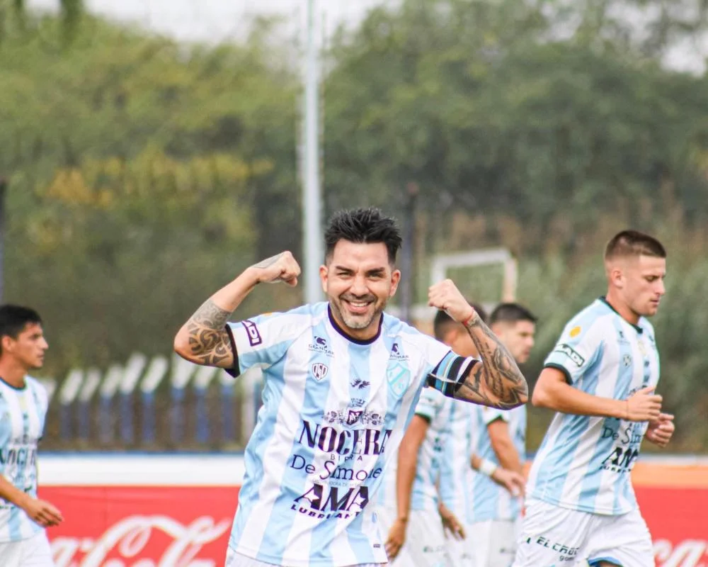

Domingo 21 de abril de 2024 | 10:28
Por la décima tercera fecha del Torneo Apertura de la Primera B Metropolitana, Argentino de Quilmes recibirá este domingo desde las 15:30 a “Los Villeros” en el Estadio “La Barranca”, bajo el arbitraje de Nicolás Kresta y la transmisión de TyC Sports Play, con la ilusión de imponerse para seguir como líder del certamen.
El equipo dirigido por Gustavo Pinto viene de igualar por 1 a 1 frente a Sportivo Italiano de visitante y quedó en la punta junto a Colegiales con 22 unidades, que hoy también juega un partido clave con Los Andes en el mismo horario, que está tercero en la tabla con 21 al igual que Cañuelas.
En referencia al rival de esta jornada, se encuentra anteúltimo en el campeonato con nueve puntos, producto de dos victorias, tres empates, seis derrotas y el pasado fin de semana cayeron por la mínima contra Fénix, por lo que el “Primer Club Criollo” no puede dejar pasar la oportunidad para llevarse los tres puntos.
Para esta ocasión, el entrenador citó a Alejo Tello, Manuel Peralta Salinas, Gerardo Alegre Rojas, Leonardo Escalante, Facundo Lando, Lautaro Suárez Costa, Juan Pablo Vivas, Lucas Arzamendia, Tomás Bugallo, Agustín Cecconato, Facundo Cipresso, José Luis García, Diego Roberts, Marcelo Vega, Julián Vila, Álvaro López, Ezequiel Madariaga, Javier Martínez y Bruno Miño.